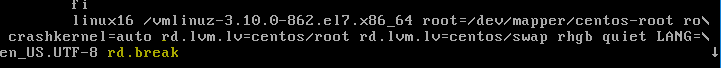
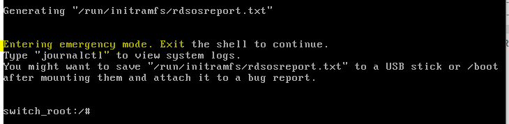
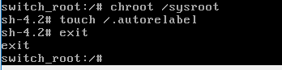

Recover root password :-
- Reboot the system
- Go to grub menu and add the the end rd.break.. And press ctrl+x ..this will boot to the emergency mode


- Mount the /sysroot as rw
- Do the chroot.. Chroot as act as a root director..this will provide access to passwd command
#chroot /sysroot
- Change the root passwd
#passwd
Enter new password :-
- Relabel for selinux to recoganize
#touch /.autorelabel
#exit
#exit
